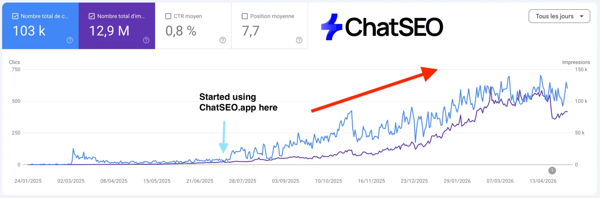
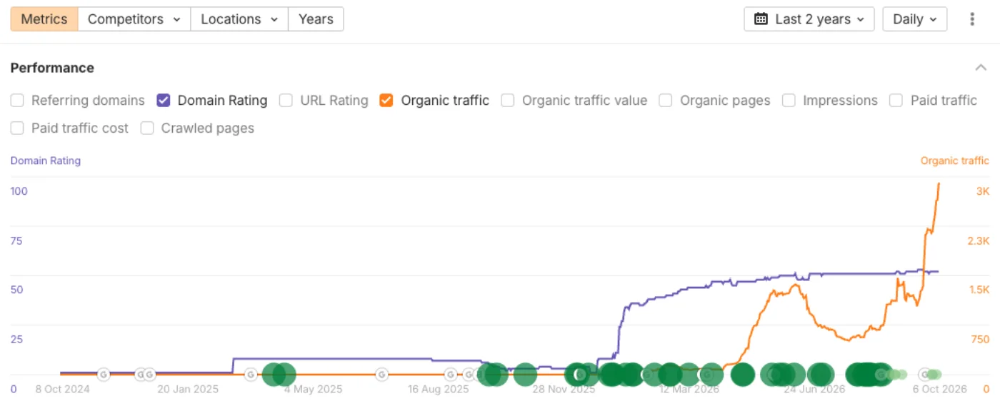
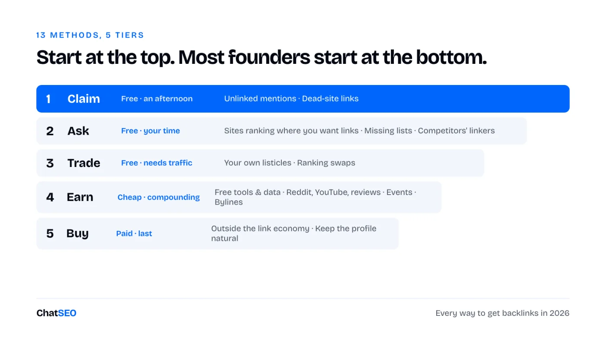
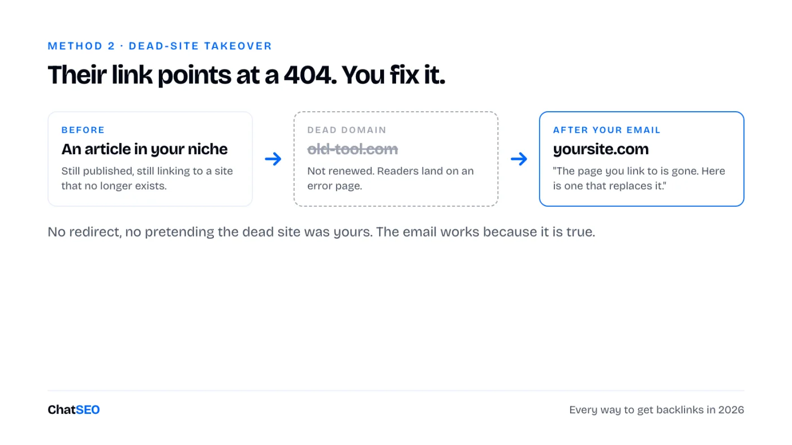
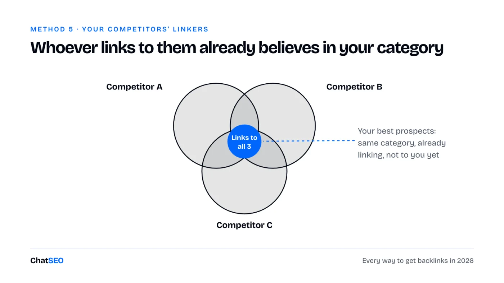
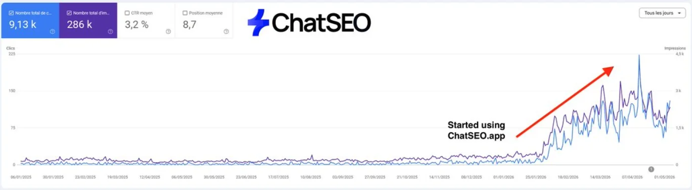
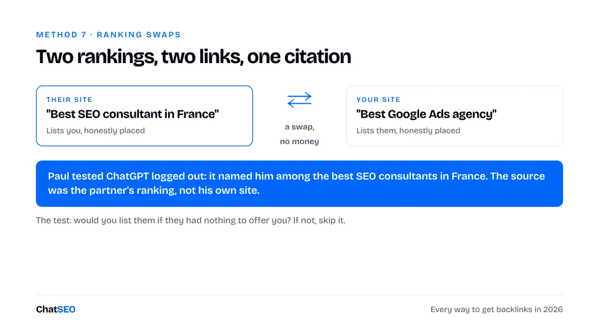
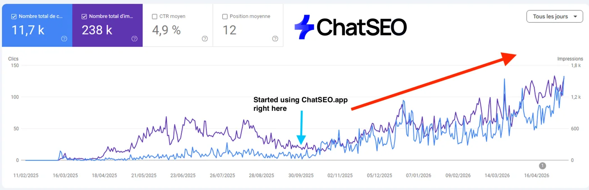
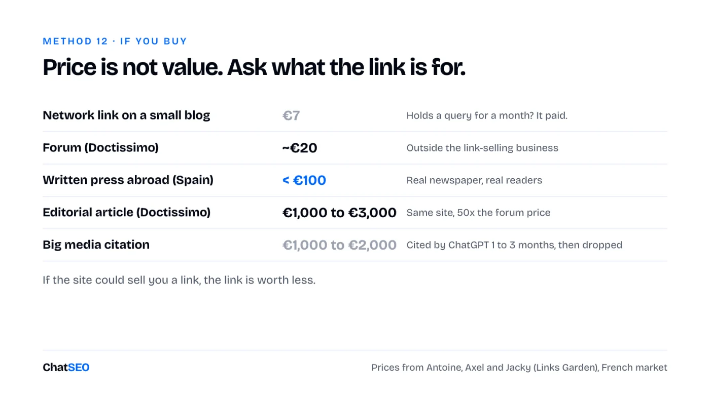

ChatSEO Playbooks / Free, nothing gated
TL;DR

If you want backlinks for your business but every "can I write for your blog" email gets ignored, the links you can buy sit on the same 40 sites as your competitors, and you don't know which links are worth anything: this is for you.
We grow ChatSEO's own organic traffic with one tool: ChatSEO. Here is where that got us.

Most of the methods below are not ours. They come from people who run links for a living, and they're named where the method or the number is theirs:
This is every way a founder can get backlinks today. 13 methods, in five tiers, from the ones that cost nothing to the ones that cost the most.

Save this. You'll come back to it.
→ Start at the top. The cheapest links are usually the ones nobody can sell you.
Free, an afternoon. The easiest link to get is one someone already meant to give you.
You are not asking for a favour here. You are fixing an omission.
Someone wrote your name and didn't link it. You email them and ask. Where they hide:
Acceptance rates are high, because the person already decided you were worth writing about.
We find ours with one prompt in ChatSEO. It comes back with the opportunities for your domain and what to do with each one.
I would like to find free backlinks. Please tell me what I should do.
Then send this. Short, specific, and it does the work for them:
Subject: Thanks for mentioning [Brand] in "[article title]" Hi [first name], I just found your piece on [topic]. Thanks for including [Brand]. One small thing: the mention isn't linked. Readers who want to try it would land on the right page here: [URL] No worries either way, and thanks again. [Your name]
A manual way to find more: search Google for "your brand" -site:yourdomain.com, then open every result that isn't a link you already have. Customer "tools we use" pages are the easiest yes of all.
Sites die. Domains lapse. The articles that linked to them stay published, pointing at nothing.

Their page currently sends readers into a 404. You are offering to fix it. That is why it converts. Axel found this one by being on the receiving end of it.
Subject: Broken link in "[article title]" Hi [first name], Your article on [topic] links to [dead site] in the section about [section]. That site is gone: the link now opens an error page. If you want a replacement, we cover the same thing here: [URL] Either way, worth fixing for your readers. [Your name]
The line not to cross. Don't redirect the dead domain and don't pretend it was yours. The clean version works because the email is true.
Free, your time. There is a whole class of links no marketplace can reach. Almost nobody asks for them.
The method is so plain it sounds like it can't work.
For each of these queries: [query 1], [query 2], [query 3], show me who ranks in the top 20 on Google today. Keep only independent sites (no marketplaces, no giants, no direct competitors), and give me one table: query, position, site, page URL. Never invent a ranking.
I liked your article on [topic]. We have one that complements it: [URL]. Would you link to it?
Axel picked up links this way from photographers, local businesses, a town hall and the Yvelines département site. None of those are for sale. Not at €50, not at €5,000. That is exactly why the link is worth something.
The rule that keeps your mailbox alive. Axel lets Claude Code send through his Gmail, capped at 10 emails an hour, business hours only. 500 emails go out over three days instead of one afternoon.
Find the roundups ranking for your category. Best tools, free tools, alternatives to the incumbent. If you belong and you're not there, make the case.
Filter before you send, or it becomes spam:
The third one matters most. The writer has already decided your category belongs in the piece.
Find the "best [category]", "free [category]" and "[incumbent] alternatives" articles that rank in the top 20 on Google today. For each one, tell me which of my competitors it lists and whether my brand is in it. Give me one table: query, position, article URL, competitors listed, am I in it. Never invent a ranking or a listing.
The pitch that works names a gap instead of asking a favour:
Your list covers [what it covers] well. None of the [N] tools [the thing yours does]. Here's a free account, no card. Judge for yourself, and if it doesn't belong in the piece, ignore this email.
The floor outcome is a mention without a link. Not a waste: those roundups are what ChatGPT reads when someone asks which tool to use.
Anyone linking to three of your competitors already believes your category deserves a link.

We run this as one prompt in ChatSEO:
Find my 3 best competitors at my level (not the industry giants). Analyse the backlinks they have, then find the contact emails of the people linking to them. Give me one table: site, page linking, competitor linked, contact email. Never invent an email.
It skips Ahrefs and Semrush as "not realistic link targets", picks competitors your size, and returns the emails. Then the pitch writes itself:
Subject: [Their page title] Hi [first name], You link to [competitor] in your piece on [topic]. Good pick. We do [the thing you do differently] for [who you serve]. If you're ever updating the page, it might be worth a mention next to them: [URL] [Your name]
Methods 1 to 5 are outreach. Run them as one routine:
Hi [first name], bumping this in case it got buried. The page is here if useful: [URL]
Hi [first name], last note from me on this. If it's not a fit for [their site], no problem at all. Thanks for reading.
Read every reply to my link outreach from the last 24 hours. Sort them into: yes, question, price asked, no, out of office. For each yes, question and price asked, draft a short answer in my voice and show it to me before anything is sent. Never send without my approval, and never promise a payment or a link back I haven't approved.
Paul's bar: five emails a day, every day. Most link deals die because the yes sat unanswered for a week.

Free, needs traffic. Once you have pages that rank, you stop asking. People come to you.
Write the roundups yourself. Best tools in your category. Alternatives to the incumbent everyone searches for.
Include competitors honestly. Rank yourself where you deserve to be, which is usually not first.
At first they do nothing. Then a few start ranking, and the dynamic flips. You have a page with traffic that other people want to be in.
List the "best [category]", "[category] for [audience]" and "[incumbent] alternatives" queries in my market with their monthly search volume, and tell me which page type ranks top 3 for each. Pick the 10 I should publish first as roundups and give me the outline for the first one. Never invent a volume.
You list them in your ranking. They list you in theirs.
Paul's live example: Convertix published "best SEO consultant in France" and "best SEO MCP". Paul published "best Google Ads agency" and "best Meta Ads agency". When he tested ChatGPT logged out, it named him among the best SEO consultants in France. The source was Convertix's ranking.

Two rules make swaps compound:
Subject: Your "[their ranking title]" + ours Hi [first name], We publish "[your ranking title]" and I'd like to add [their brand]: it genuinely belongs there. You run "[their ranking title]". If [your brand] fits, would you consider adding us at the next update? Both pages get better. [Your name]
The policy line. Google's link spam policy lists excessive link exchanges as spam. The test I use: would I include this business if they had nothing to offer me? If no, skip it. A handful of swaps between businesses that belong together is an editorial decision. Fifty reciprocal links across a ring of sites is a footprint.
Cheap, compounding. A homepage is not citable. A writer needs something specific to link to.
Ranked by how hard they are to copy:
Look at my Search Console data for the last 12 months and find 3 facts about my market that nobody else could publish (a trend, a seasonality, a query shift). For each, write the headline a journalist would quote and the one chart that proves it. Use only numbers from my data, never invent one.
Some links come from places you post, not places you pitch.
Our DR came from exactly this kind of footprint before we ever ran a campaign: a sponsored article on Medium, a Reddit thread, a review of the tool on an authority site.
A skincare brand runs an event in a shopping centre. Local press shows up and writes about it.
The links land in the real editorial section, cheaper than buying them. Axel's example is Motoblouz, whose events got them covered by regional papers like La Voix du Nord.
Subject: [Event] at [place], [date] Hi [first name], On [date] we're running [event, one line] at [place], open to the public. [One concrete detail a reader would care about.] You'd be welcome to come by, or I can send photos and a quote after. Our site, if useful for context: [URL] [Your name] · [phone]
The limit: press links point at your homepage. They don't push the one page you need to rank. You need both.
Antoine's ladder, two rungs up from the cheap stuff:
The trap: bylines depend on one person. Paul's Journal du Net links stopped the day the editor who approved them left.

Read the policy first.
Google's link spam policy says links that pass ranking credit in exchange for payment violate it, on both sides. A compliant paid link carries rel="sponsored" or rel="nofollow", which removes exactly what you paid for.
→ Anyone selling you a "safe dofollow placement" is selling a policy violation with a reassuring name.
The usual outcome is not a penalty. It's a link that gets discounted, and you paid for nothing.
The rule underneath: if the site could sell you a link, the link is worth less. From cheapest to best:
And the price that should scare you: Jacky sees €1,000 to €2,000 media citations cited by ChatGPT for one to three months, then dropped. A €10 to €20 placement does about the same.

Five checks before you pay:
I'm considering a paid placement on [site URL], on the page [page URL or "new article"]. Check: what this site ranks for and whether those keywords are adjacent to mine ([my domain]), and whether the page itself gets search traffic. Then tell me buy or skip, with the one reason that decides it. Never invent a traffic or ranking number: if you don't have the data, say so.
Google doesn't count links. It reads the pattern. Axel's anomalies, the ones that make a profile look built:
Audit my backlink profile against these five anomalies: share of exact-match anchors, spread of TLDs, share of links from WordPress sites, share of nofollow links, and number of referring domains to my target page [URL] compared with the top 3 pages ranking for [query]. Flag only the anomalies that are real, and give me the one fix to make first. Never invent a count.
A profile that's too clean is the anomaly.
What this page can't do for you. Every method above starts with live data: who mentions you without a link, who ranks top 20 on your queries today, who links to your competitors and how to reach them. A page of instructions can't fetch any of that. ChatSEO does, in one message, and that's how we found our own links. The first 7 days are free.
One row per prospect. If it's not in the sheet, it didn't happen.
Date | Method (1-13) | Site | Page URL | Contact | Email sent | Follow-up 1 | Follow-up 2 | Reply | Status (asked / yes / live / no) | Link URL | Anchor | Follow / nofollow | Cost | Checked live on
Re-check every live link once a quarter. Links decay, and you want to know which method's links last.
The part I'm confident generalises is the order: claim, ask, trade, earn, then buy. The part I'm not confident generalises is how fast each one pays.
In that order, because each tier gets cheaper once the one before it exists.
🎁 If you want to hire your first AI SEO employee (for free), click here.